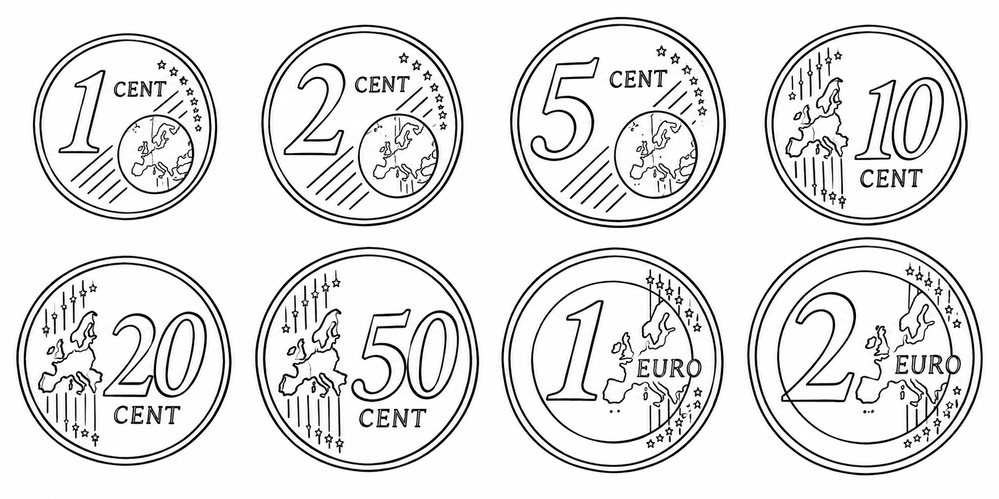

Informatik · Klasse 6
Von Münzen zu Binärzahlen
Du kannst mit Münzen bezahlen. Aber kannst du mit ihnen auch herausfinden, wie ein Computer Zahlen speichert?
Station 1 · Das kennst du schon
Ein Betrag, viele Möglichkeiten
Diese acht Euro-Münzen kennst du bestimmt: 1, 2, 5, 10, 20 und 50 Cent sowie 1 und 2 Euro. Mit mehreren Münzen kannst du größere Beträge zusammensetzen. Denk daran: 1 Euro sind 100 Cent.

Wie würdest du zum Beispiel 60 Cent bezahlen? Mit sechs 10-Cent-Münzen? Oder mit einer 50-Cent- und einer 10-Cent-Münze? Beides geht!
Deine Münzwerkstatt
Lege den passenden Betrag
Du bekommst einen zufälligen Betrag von 0,01 € bis 10,00 €. Wähle für jede Münzsorte eine Anzahl. Du kannst die Zahl eintippen oder die Plus- und Minus-Tasten benutzen.
Jede passende Zusammenstellung zählt. Du darfst Münzsorten mehrfach verwenden.
Gesucht:
Station 2 · Geht es mit weniger?
Spare Münzen
Jetzt zählt nicht nur der Betrag: Gesucht ist die kleinste Anzahl von Münzen. Bei 60 Cent sind das zwei Münzen: 50 Cent und 10 Cent.
Tipp umklappen: Wie spare ich Münzen?
Nimm zuerst die größte Münze, die noch in den fehlenden Betrag passt. Zieh ihren Wert ab. Mach mit dem Rest genauso weiter, bis nichts mehr fehlt.
Bei den Euro-Münzen findest du so eine Lösung mit möglichst wenigen Münzen. Beispiel: 87 Cent = 50 Cent + 20 Cent + 10 Cent + 5 Cent + 2 Cent, also fünf Münzen.
Die gleiche Regel klappt nicht bei jeder erfundenen Währung. Hier passt sie zu unseren Euro-Münzen.
Station 3 · Eine neue Münzwelt
Jede Münze ist doppelt so viel wert
Stell dir eine neue Währung vor. Ihre Münzen sind 1, 2, 4, 8, 16, 32, 64, 128 und 256 Cent wert. Von einer Münze zur nächsten verdoppelt sich der Wert. Die größte Münze ist also 2,56 € wert.
Diese Cent-Werte heißen Zweierpotenzen: \(2^0 = 1\), \(2^1 = 2\), \(2^2 = 4\) und so weiter. Ein Münzwert in Euro ist eine Zweierpotenz mal 0,01 €.
Die neue Regel: Von jeder Sorte hast du genau eine Münze. Du kannst sie nehmen oder liegen lassen. Auch die Null ist möglich: Dann nimmst du gar keine Münze.
Hilfekarte umklappen: Alle Zweierpotenzen
| Potenz | Cent | Euro |
|---|---|---|
| \(2^0\) | 1 | 0,01 € |
| \(2^1\) | 2 | 0,02 € |
| \(2^2\) | 4 | 0,04 € |
| \(2^3\) | 8 | 0,08 € |
| \(2^4\) | 16 | 0,16 € |
| \(2^5\) | 32 | 0,32 € |
| \(2^6\) | 64 | 0,64 € |
| \(2^7\) | 128 | 1,28 € |
| \(2^8\) | 256 | 2,56 € |
Nehmen oder liegen lassen?
Tippe auf die Münzen, die du benutzen möchtest. Tippe noch einmal, um eine Münze zurückzulegen. Jede Münze gibt es nur einmal.
Alle neun Münzen zusammen sind 5,11 € wert. Deshalb liegen die zufälligen Aufgaben hier zwischen 0,00 € und 5,11 €.
Gesucht:
Tipp umklappen: Welche Münze nehme ich?
Beginne mit der größten Münze. Ist sie höchstens so viel wert wie dein noch fehlender Betrag? Ja: Nimm sie und zieh ihren Wert ab. Nein: Lass sie liegen. Prüfe dann die nächstkleinere Münze.
Anders als bei Euro-Münzen brauchst du hier keine Münze doppelt. Jeder ganze Cent-Betrag von 0 bis 511 hat genau eine passende Auswahl.
Knobelfrage umklappen: Könntest du 10,00 € bezahlen?
Nein. Selbst mit allen Münzen kommst du nur auf 5,11 €. Die nächste Münze müsste 5,12 € wert sein. Zusammen mit den bisherigen Münzen könntest du damit Beträge bis 10,23 € darstellen.
Station 4 · Von Münzen zu Schaltern
Was haben 0 und 1 mit dem Computer zu tun?
Bei jeder neuen Münze hast du nur zwei Möglichkeiten: liegt da oder nehme ich. Du könntest dafür einfach 0 und 1 aufschreiben: 0 bedeutet „nicht genommen“, 1 bedeutet „genommen“.
Auch ein Computer arbeitet mit zwei gut unterscheidbaren Zuständen. Stell dir einen winzigen Schalter vor: aus oder an. Wir nennen die beiden Zustände 0 und 1. Eine Speicherstelle für eine solche 0 oder 1 heißt Bit.
Ein einzelnes Bit reicht nur für zwei Möglichkeiten. Viele Bits nebeneinander können viel mehr ausdrücken – genauso wie deine neun Münzen zusammen viele verschiedene Beträge ergeben.
Deine Idee
Wie könnte ein System, das nur 0 und 1 kennt, unsere Zahlen darstellen?
Denk an die Münzen: Was könnte jede Stelle einer Folge aus Nullen und Einsen wert sein? Wie würdest du die Zahl 42 aufschreiben?
Deine Notiz bleibt nur auf dieser geöffneten Seite und wird nicht gespeichert oder abgeschickt.
Erklärung umklappen: So entstehen Binärzahlen
Jede Stelle bekommt einen Wert wie eine unserer Münzen. Ganz rechts steht 1, links daneben 2, dann 4, 8, 16 und so weiter. Eine 1 heißt: Zähle diesen Wert dazu. Eine 0 heißt: Lass ihn weg.
| Wert in Cent | 256 | 128 | 64 | 32 | 16 | 8 | 4 | 2 | 1 |
|---|---|---|---|---|---|---|---|---|---|
| Genommen? | 0 | 0 | 0 | 1 | 0 | 1 | 0 | 1 | 0 |
\(42 = 32 + 8 + 2\). Die Auswahl heißt also 000101010. Nullen ganz links darfst du weglassen: 101010. Das ist die Binärdarstellung der Zahl 42.
Wir schreiben \([42]_{10} = [101010]_2\). Die kleine 10 bedeutet „Dezimalsystem“, die kleine 2 „Binärsystem“. Es ist dieselbe Zahl in zwei Schreibweisen.
Zurück geht es genauso: Bei 101010 addierst du die Stellenwerte mit einer 1, also \(32 + 8 + 2 = 42\). Die Stellen mit einer 0 tragen nichts bei.
Unsere neun Münzen entsprechen neun Bits. Acht Bits heißen ein Byte. Mit acht Bits kannst du die ganzen Zahlen von 0 bis 255 darstellen.